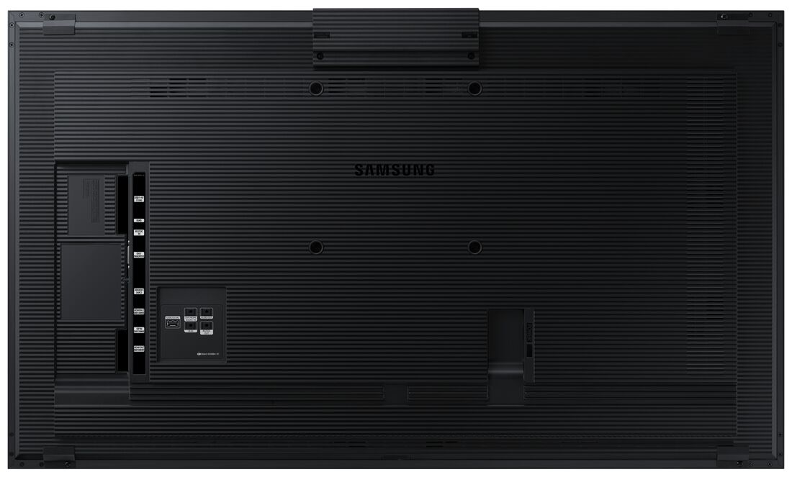
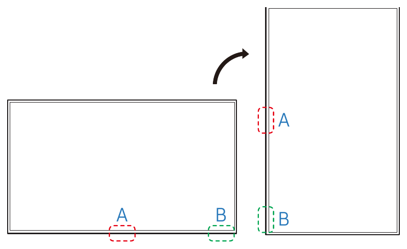
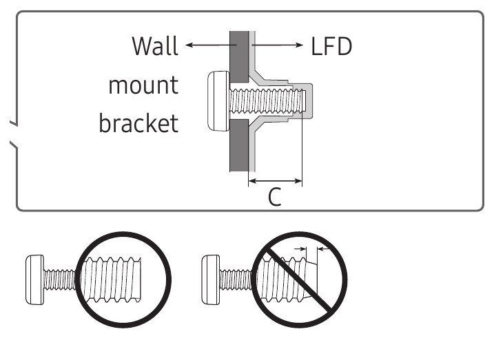
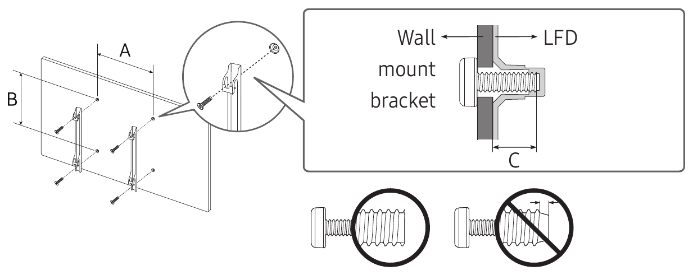
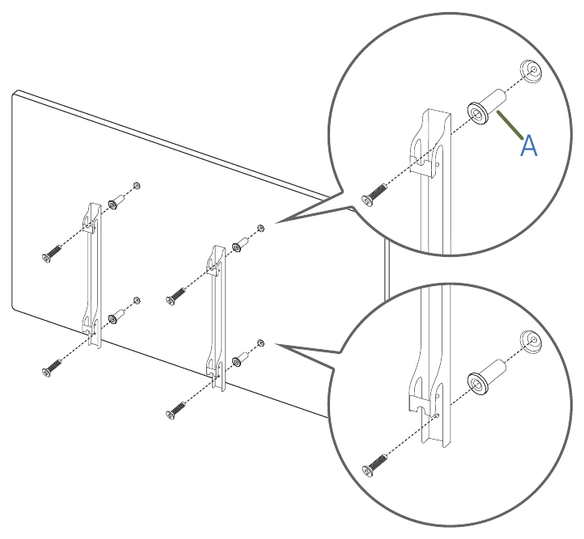
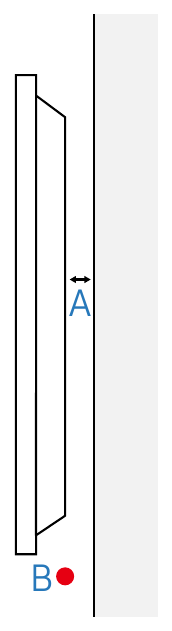
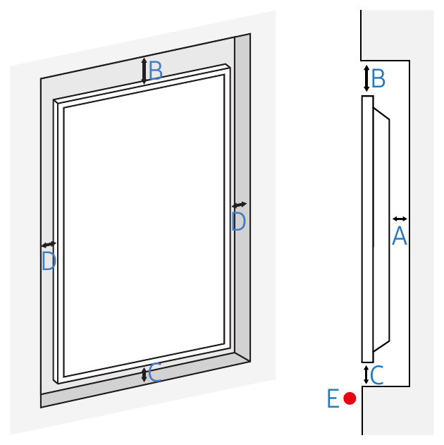
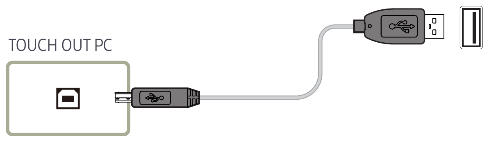

Part 1 · What you are mounting
read first
- 1Four mounting holes (the VESA pattern)
- 2Raised cover along the top edge, with the TOUCH OUT labels
- 3Connector area
- 4Power inlet
- Model
- LH55QMBTBGCXZAAlso QM55B-T. Read the label on the back.
- Orientation
- Portrait. Turn the display clockwise, as seen from the front. pp. 15, 18, 22
- Size, portrait
- 28.92 in wide × 49.36 in tall × 2.23 in deep734.6 × 1253.8 × 56.7 mm. product page
- Weight
- 59.3 lb (26.9 kg), display alone product pageThe bracket adds to this.
- Mounting holes
- VESA 200 × 200 mm (7.9 in), 4 holes p. 24
- Display screws
- M8, 4 of them. Screw depth into the display: 29 to 30 mm (Samsung's "C"). p. 24
- Gap behind
- At least 40 mm (1.6 in) between the board and the display's back p. 22
- Room
- Under 35 °C (95 °F) p. 22
- People
- At least 2 p. 24
- Board
- 36 in wide × 87½ in tallFrom the supplied drawing. Measure the real board.
What "VESA 200 × 200" means
VESA is the standard spacing of the four screw holes on the back of a display. 200 × 200 means the holes sit at the corners of a square, 200 mm (7.9 in) apart in both directions, center to center. A bracket made for 200 × 200 has matching holes, so it bolts to the display. That is all it tells you: not that it can carry this weight, works in portrait, or can attach to this board.
Two sets of fasteners
Most brackets come in two parts: one fixes to the board, the other fixes to the display and hangs on the first. This page calls them the board-side part and the display-side part.
- Into the display. Four M8 screws hold the display-side part to the display. Samsung gives the size and the depth (step 14, step 26).
- Into the board. The fasteners that hold the board-side part to the board's support: the framing or backing behind its surface. This page does not name them. They come from the approved mounting detail (step 3, step 23).
Which way to turn it
Turn the display clockwise, as seen from the front. Samsung's rule: rotate clockwise until the power indicator sits as in its drawing. Facing the screen, the power indicator and power button end up on the left edge. pp. 15, 18, 22

Part 2 · Before the visit
office, before you travelAgree the screen position To confirm
With whoever assigned the job, agree the height and the left-right position, and what they are measured from (floor or board edge). In portrait the display covers 28.92 in × 49.36 in. The board is 36 in × 87½ in (drawing).
Fitting inside the board's outline says nothing about support. The approved detail has to cover this position.
Choose the bracket Not selected
The bracket must meet every line:
- Holes 200 × 200 mm, for M8 screws
- Rated by its maker above 26.9 kg (59.3 lb), and at least the design load the approved detail uses
- Maker says it can be used in portrait
- Holds the display at least 40 mm (1.6 in) off the board. Check the maker's stated depth.
- Has locking or safety hardware, and the maker's instructions
- Attaches the way the approved detail says
Samsung says to install the specified wall mount (p. 22), and is not liable when a non-VESA or non-specified mount is used (p. 24). Its product page lists WMN4070SG in the Mount field. Portrait use, load rating and depth for that mount are not confirmed. If you want it, put it to whoever approves the detail, with the maker's sheet.
Get the approved mounting detail Blocked
Ask the board's maker, or the person responsible for the board, for a written detail. It must say how the board-side part attaches to the board, which fasteners to use, and how much load the board can carry. It must name who approved it, the date, the bracket and the screen position it covers.
Display: Samsung LH55QMBTBGCXZA (QM55B-T), 59.3 lb (26.9 kg), 28.92 in wide x 49.36 in tall x 2.23 in deep in portrait, touch screen, VESA 200 x 200 mm, M8 x 4
Board: 36 in wide x 87.5 in tall. Material, thickness, framing behind the surface, anchorage and load capacity: please advise
Screen position: ____
Bracket: make ____ model ____ rated load ____ depth from board ____
Please send in writing: how the bracket attaches to the board, which fasteners to use, the load the board can carry, who approved it, and the date
Not established: board material, thickness, framing, anchorage, load capacity. Fitting inside the outline does not make it strong enough.
Tick only when you hold the written detail.
Get the holding method in writing To confirm
Ask the bracket maker or Samsung, in writing, how to hold the display while the display-side part goes on. Samsung says not to lay the display on its front (p. 8) or stand it on an edge (p. 11). The lay-flat method on p. 11 is for 85-inch and larger models only. Only Samsung can approve either one, in writing.
Pack whatever support the method names. Tick only when you hold a written method that lays the display on neither its front nor an edge.
List the bracket's hardware To confirm
From the bracket's instructions, write down every part it needs: the display-side M8 screws (with their length), spacers or washers, and locking hardware. Add the board-side fasteners the approved detail names.
This page names no fasteners, drill sizes, torque values or screw lengths. Take them from the bracket's instructions and the approved detail.
Arrange the crew
At least two people must mount the display (Samsung, p. 24). Together they can safely lift 59.3 lb (26.9 kg) plus the bracket's parts. Both stay through step 39. Add a third person if the hooks sit above shoulder height.
Samsung: an authorized installation company installs the wall mount (p. 22), and a technician installs the wall-mount hanger (p. 8). Tick only when whoever assigned the job confirms your crew meets that.
Confirm the source device To confirm
What will drive the display: a PC, laptop or tablet PC, or the display's own built-in player? Touch is wired differently for each (step 33). Note what the source outputs (HDMI or DisplayPort) and whether it has a free USB port.
The manual covers touch for a PC, laptop or tablet PC (pp. 26, 27), with calibration steps for Windows only. The built-in player's touch works only in the display's menus (p. 25). Any other source: touch is not covered, so confirm it before the visit.
Pack the display kit
Pack the bracket, hardware and papers
Paper or on the phone, as you prefer.
Pack tools and cables
Part 3 · Onsite checks
before anything is drilled or liftedCheck the display
Read the label on the back: it should say LH55QMBTBGCXZA or QM55B-T. Write down the serial number. Look the display over for damage.
Two people. Hold the display as the step 4 method says, or leave it in its packaging. Never face down, never on an edge (pp. 8, 11). Photo: the label.
- the model is different. The weight, hole pattern and screw depth on this page are for this model only.
- the display was dropped, knocked or is visibly damaged. Don't power it up. Contact Samsung (p. 9).
Check the board against the approved detail
Material, thickness, framing behind the surface, how the board is anchored, and the load it can carry must all match the approved detail. Measure the board: the drawing says 36 in wide × 87½ in tall. Check with your level that the board is vertical.
Samsung: install the wall mount on a solid wall perpendicular to the floor. For any other area, contact the nearest agency. A slanted wall may let the display fall (p. 24).
- there is no approved detail
- anything about the board is unknown, or differs from the detail
- the board is loose or damaged, or could tip or pull away with the display's weight on it
- the board is not a solid, vertical surface, or you can't confirm it is (p. 24)
Check the real bracket
Go down the list in step 2 again, with the real bracket and the maker's sheet in your hands. Check it against the display and against the approved detail. Take the depth from the maker's own drawing.
Photo: the bracket's label or box (make, model, rating).
Check the display-side screws, on the bench
In Samsung's drawing, C runs from the display's back face to the tip of the screw. It is how far the screw goes into the display: 29 to 30 mm for this model. It is not the screw's length.

Measure it: put a screw through the bracket's plate, spacer and washer, in the order they go on the display. Measure how far it sticks out past the last part. That is the screw depth. It must be 29 to 30 mm, with M8 screws threaded right to the end, like Samsung's left drawing. Use the screws and spacers that come with the bracket.
Samsung: don't use screws longer than the standard length or that don't meet the VESA screw spec. Screws that are too long can damage the inside of the display (p. 24).
Samsung's full drawings, with the hole spacing A and B


Measure the display and dry-fit its part
Measure the four holes on the back of the display: the spacing both ways (expect 200 mm), and the distance from the hole pattern to each edge. Record the edge distances as the display will hang: portrait, seen from the front, power-indicator edge on the left. Write them down for the handoff note.
Then hold the display-side part of the bracket against the back, without screws. It must sit flat and clear the raised cover, the connectors and the power inlet.
Don't assume the hole pattern is centered: Samsung's rear drawings and photo show it off-center. Neither Samsung source gives the distances to the edges. Two people. Hold the display as the step 4 method says, or leave it in its packaging. Never face down, never on an edge (pp. 8, 11).
Confirm which way the display turns
Clockwise, as seen from the front. Facing the screen, the power indicator and power button end up on the left edge (pp. 15, 18, 22). Settle this before the board-side part goes up.
Check from the back: with the display in landscape and the raised cover at the top, the top of the bracket points to your right.
The hole pattern is square, so it looks the same turned any way. It won't tell you which way is up. The power indicator does.
Mark the position on the board
Mark the agreed position with masking tape: the outline of the display, in portrait. Nothing is drilled. Check it matches the position in the approved detail.
Check the space around the display
- Not a ceiling, floor or table (p. 22)
- Not in a kitchen, near heat, or in direct sun (pp. 7, 8)
- Room under 35 °C (95 °F) (p. 22)
- Room for a gap of at least 40 mm (1.6 in) between the board and the display's back (p. 22). From the maker's drawing (step 13), the bracket must hold the display's rear-most point, the raised cover included, that far off the board. You measure the real gap in step 31.
- the display would sit in a recess, cabinet or enclosure. It then needs more room (see Recessed or enclosed? below). If you can't give it, stop.
- the place is dusty, wet, full of chemicals, or very hot or cold. Samsung says to contact its service center before installing (p. 8).
Plan power and cable routing
- A power outlet within reach of the Samsung cord, with nothing blocking it (p. 7). If the cord's plug has a ground pin, use a grounded outlet (p. 6).
- A path for the video cable and the touch cable, to the source
- The supplied TOUCH OUT cable reaches the source's USB port
- Cables may cross the gap behind the display. Don't coil or bundle them in it.
- Find the ports on the real unit, turned to portrait.
Expected from Samsung's rear drawings (pp. 15, 17), turned clockwise and seen from the front: the raised TOUCH OUT cover on the right-hand edge, the connector area along the lower part, the power inlet toward the upper left. Check it on the unit.
Recessed or enclosed? The extra room Samsung asks for
Samsung gives separate numbers when the display sits in an indented (recessed) wall. Portrait, as drawn: A behind the display 40 mm (1.6 in). B above it 70 mm (2.8 in). C below it 50 mm (2 in). D each side 50 mm (2 in). E air temperature under 35 °C (95 °F). p. 22
For an enclosure, keep the inside temperature at 40 °C (104 °F) or below (p. 105). Only use approved cabinets (p. 8). Don't install in a poorly ventilated space such as a bookcase or closet (p. 7). For further details, contact Samsung's service center (p. 22).


Samsung drawings, p. 22, source. Cropped.
Part 4 · Install
two people from here onGate. Start Part 4 only when every box in Parts 2 and 3 is ticked and no STOP applies.
If something here stops you: switch the display off, keep it supported or back in its box, tell whoever assigned the job, and write it in the handoff note.
Switch everything off and unplug
Display off. Power cord out of the wall and out of the display. No other cable on the display. Keep the display in its box, or covered, away from the drilling.
Samsung: don't install the mount while the display is on (p. 24). Before moving the display, unplug the power cord and all other cables (p. 7).
Dry-fit the bracket and mark it
Hold the board-side part of the bracket at the taped position, as its instructions show. Use the distances from step 15 and the bracket's instructions to place it so the display lands on the taped outline. Check it with your level. Mark the attachment points. Don't drill yet.
Check every mark against the approved detail
Each attachment point must land on the support the approved detail names.
Fix the bracket to the board No undo
This is the point of no return: the board gets drilled. Use the fasteners and the method in the approved detail and the bracket's instructions.
This page names no fasteners, drill sizes or torque values. Don't improvise any.
Photo: the board-side fasteners.
Check the board-side bracket is solid
Level, tight, and no movement when you push it by hand. Use the maker's test if it gives one.
Run the cables, unplugged
Lay the power, video and touch cables to the display position. Leave slack. Label both ends. Nothing is plugged into the display yet, and the power cord stays out of the wall.
Fit the display-side hardware
Hold the display as your written method says. Fit the display-side part so that, hung, the power indicator is on the left edge seen from the front. Check from the back: with the display in landscape and the raised cover at the top, the top of the bracket points to your right.
Fit the four M8 screws, with the bracket's own spacers or washers, into the four holes, as the bracket's instructions show. Tighten as the instructions say, to their torque value if they give one. Don't over-tighten.
Check all four screws are in, and the parts sit flat and clear the raised cover, the connectors and the power inlet on the back.
Samsung: screws that are too tight can damage the display or let it fall (p. 24). Photo: the screws and spacers in place.
Lift it, with two people
Clear the path to the board first. Lift together. Don't hold the display within 15 mm (0.6 in) of the front (p. 11), and never lift it by the screen. Don't drop it (p. 8). If the hooks are above shoulder height, use a third person or a stable platform.
Hang it and engage every lock
Hang the display on the bracket as its instructions show. Engage every lock and safety fitting.
Photo: the locks engaged.
Check it is hooked on and steady
Both people keep their hands on the display. Use the maker's test if it gives one. If not, as general practice (not Samsung's): with your hands at least 15 mm back from the front edge (p. 11), give the top and bottom edges a gentle pull outward and a gentle push side to side.
Plug the video and touch cables into the display
One person keeps a hand on the display. The other plugs in. Video first, then the touch cable (p. 27). The power cord stays out until step 34.
- Video: HDMI or DisplayPort into the display. Built-in player: skip this.
- PC source: the TOUCH OUT cable goes into TOUCH OUT PC.
- Built-in player: the TOUCH OUT cable goes between TOUCH OUT SCREEN and the display's own USB 1 or USB 2.
Match the labels on the unit. The wiring is explained in step 33.
Check strain relief and the gap, then let go
- No weight, pull or sharp bend on any plug
- Nothing pinched between the display and the board
- Gap at least 40 mm (1.6 in) from the board to the display's rear-most point. Measure it.
- Every lock still engaged
Only now take your hands off.
Photos: the side view showing the gap, the cables with their strain relief, and the whole display from the front.
Part 5 · Setup and test
cables, orientation, picture, touchConnect the video cable at the source
HDMI or DisplayPort, into the source device. The power cord is still out. Built-in player: skip this step.
Connect the touch cable at the source
HDMI and DisplayPort do not carry touch. Touch needs its own USB cable. Video first, then touch (p. 27).
- PC, laptop or tablet PC: the other end of the TOUCH OUT cable goes into a USB port on the PC (pp. 26, 27).
- Built-in player, no PC: the cable is already between TOUCH OUT SCREEN and the display's USB 1 or USB 2. Touch then works only in the display's on-screen menu and the admin menu, not in apps (p. 25).

Plug in the power cord, last of all
Display end first, then the wall outlet. Samsung: don't connect the power cord until every other connection is made, or the display may be damaged (p. 30). Check the cord has no strain on it. Then switch the display on with the remote.
The display should pick up the source by itself. Blank screen: switch it off and on again (p. 26).
Set portrait, in one place only
Turn the picture in one place only. Doing both turns it twice.
- PC, laptop or tablet PC: turn it in the PC's display settings. Leave the display's own setting alone.
- Built-in player: the Player has its own Content Orientation setting (p. 51).
- Any other source that can't turn its own picture: in the display's menu, with the remote: OnScreen Display › Display Orientation › Source Content Orientation › Portrait. Then Aspect Ratio: full screen or original (p. 70). A landscape picture turned by the display can't both fill a portrait screen and keep its shape.
The menu itself can be turned with Onscreen Menu Orientation (p. 70).
Samsung's product page says the display can recognize its own rotation (Auto Level). The manual doesn't describe it. If the picture is already upright, change nothing. If it is upright but shrunk or stretched, undo the display's Source Content Orientation and turn it at the source instead. The manual doesn't say whether touch stays lined up when the display does the turning: you test that in step 38.
Calibrate touch Windows PC
Do this after the orientation is set, not before and not during. Samsung: don't change the orientation until calibration is finished (p. 29).
- Open Tablet PC Settings. On the Display tab, tap Setup, then tap the page that shows on the display to mark it as the touch screen.
- Pick the display, tap Calibrate, and tap each crosshair as it appears.
- Save when asked.
Samsung's steps cover Windows 7, 8 and 10. With more than one screen, set this display as the main display. You may need to calibrate again after changing Picture Size (p. 28). Not a Windows PC? The manual has no calibration steps for it: go on to the test.
Check the picture over the whole screen
All four edges visible. Nothing cut off. Fills the screen, not squashed or stretched. Right way up for portrait.
A rotation warning on the screen means the display is at the wrong angle (p. 71).
Test touch over the whole screen
Use a fingertip. No gloves, nails or pens, and don't press hard (p. 25). Tap the four corners and the center. Then drag a line down the full height and across the full width.
The response must land under your finger every time.
Touch not working, or landing in the wrong place?
- Unplug the touch cable and plug it back in. The video cable goes in first (p. 27).
- PC source: is the cable in TOUCH OUT PC and in a USB port on the PC? (p. 102)
- Wrong place: calibrate again (step 36).
- With the remote: System › Touch Control › Touch Control, set to On (p. 19).
- Dirty screen: unplug the power cord, wipe with a soft, dry cloth, and use no spray or cleaner (p. 12). Plug the power back in last. Keep direct sunlight off the screen (p. 102).
Check the mount again after touching
Tap and drag as in step 38 and watch the display. It must not move, rock or creak on the bracket. Check the locks are still engaged.
Part 6 · Handoff
checks, photos, noteRun the completion checks
If any line is not true, the install is not done. Fix it, or write it under open items and tell whoever assigned the job before you leave.
Check the photos
Photos stay with you. This page never collects or shows them. Keep client screens, logins and network details out of the frame.
Fill in the handoff note
Copy the note, paste it into a message, and fill in the blanks. List anything open, including every STOP you hit and every item still unconfirmed.
Display: Samsung LH55QMBTBGCXZA, serial ____
Installers: ____ (authorized installer: yes / no; no is a STOP)
Bracket: make ____ model ____ rated load ____ portrait OK per maker: yes / no
Board: material ____ thickness ____ support ____ approved detail ref ____ approved by ____ date ____
Holding method used: ____ (from ____)
Fasteners used: as the approved detail ____
Display-side screws: M8 x 4, screw depth ____ mm (must be 29 to 30)
Holes measured: ____ x ____ mm. Pattern to edges (portrait, seen from the front, indicator edge left): top ____ bottom ____ left ____ right ____
Screen position: ____ (measured from ____)
Gap behind display: ____ mm (minimum 40)
Source: ____ by HDMI / DisplayPort
Touch: PC USB / built-in player
Portrait set at: source / display menu
Picture check: pass / fail
Touch check (corners, center, drag): pass / fail
Display steady after touch test: yes / no
Photos attached: ____ of 8
STOPs hit and open items: ____
Installed by / date: ____
Send the note and photos
Send both to whoever assigned the job. This page keeps no record.